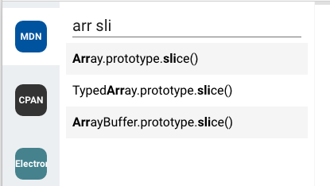
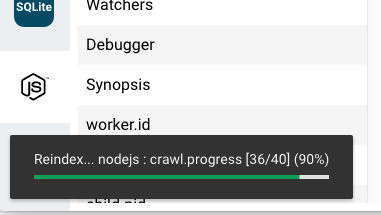
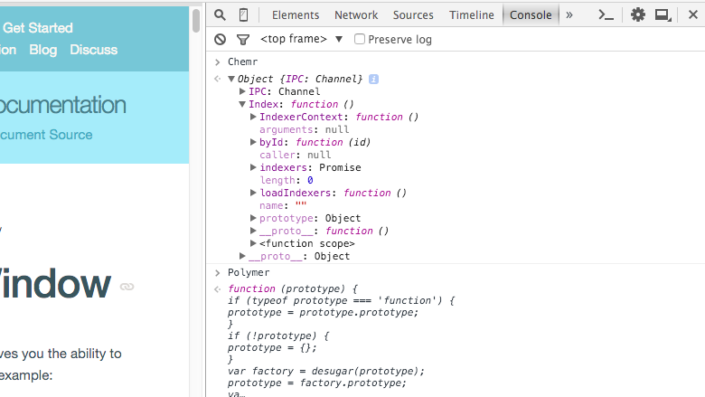
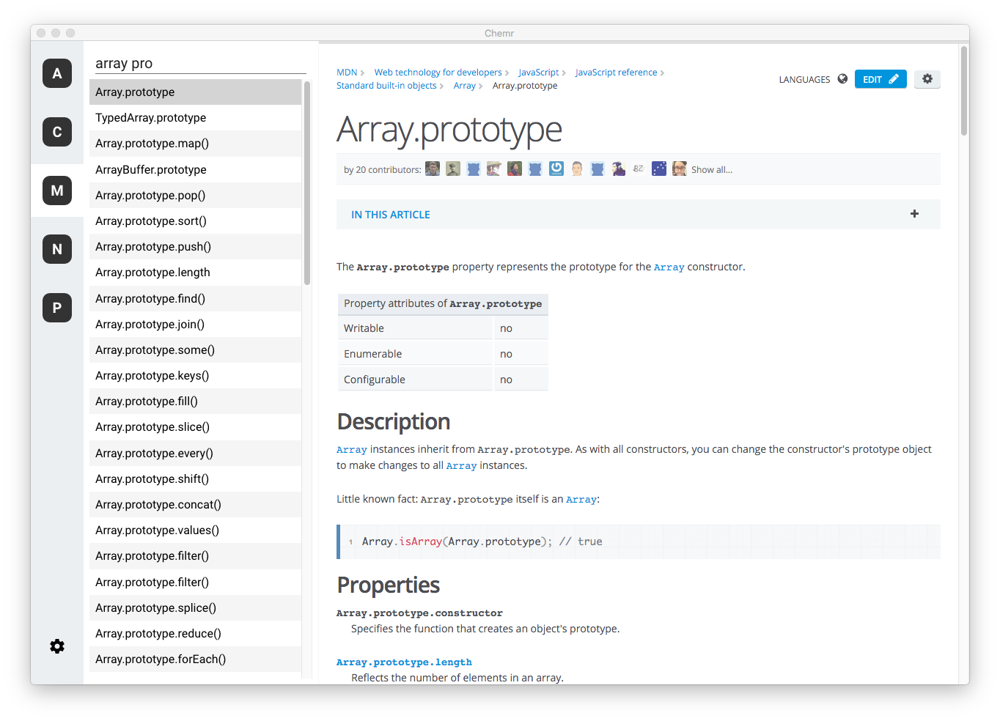
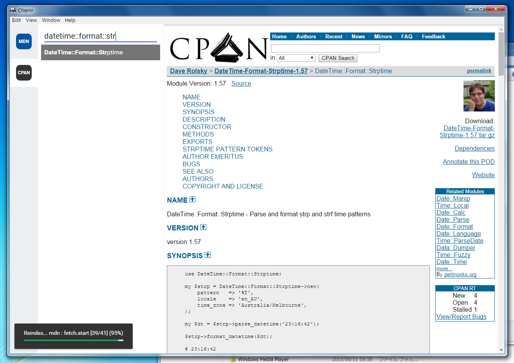

Overview
Incremental Search
Chemr has fuzzy matched incremental search. You can query any old how.
On-demand Indexers
Chemr includes indexing system for generating index. You can index any web sites on your demand.
Built on Electron
Chemr is developed with standard web technologies: HTML, CSS, JavaScript. So you can modify this very easily.
Screenshots
OS X
Windows
Download
Build from source
Or create your own build with following:
Install Development Tools
Clone Repository and Install Dependencies
git clone https://github.com/cho45/Chemrtron.git
cd Chemrtron
npm install
Package
make mac (for macOS)
make win (for Windows)
Packaged application is located under dist/
Packaged release
For Windows or Mac
Usage
Introduction
- Enable indexer at settings dialog.
- Start initial indexing by selecting icon.
- Ready to query.
Select Index
Press Control + Enter to open select index dialog.
Or Alt + [Number] / Command + [Number] for selecting index directly.
Keyboard shortcuts
| Alt + Space | (Global) Default shortcut key for activating Chemr window. This is customizable on settings. |
|---|---|
| ⌘L Control + L |
Focus to query text area. |
|
Control + N ↓ |
Select next item. |
|
Control + P ↑ |
Select previous item. |
| Control + U | Clear current query. |
| ⌘↵ Control + Enter |
Open index selection dialog. |
| ⌘[ Control + [ |
Back navigation. |
| ⌘] Control + ] |
Forward navigation. |
| ⌘[Numer] Control + [Number] |
Select index by index. |
Reindex by hand
To reindex by hand for updating to latest index. Right click or double click index icon and open menu by clicking gear icon.
Including Indexers
Create New Indexer
The indexer definition files is written in JavaScript and load from following paths:
- $HOME/.chemr/indexers/*.js
- $APP_ROOT/indexers/*.js
You can put your own indexer to $HOME/.chemr/indexers/.
Indexer definition file
This is a sample indexer definition for PHP:
indexer = {
id: 'php',
name: 'PHP',
index : function (ctx) {
return ctx.fetchDocument('http://www.php.net/manual/en/indexes.functions.php', { srcdoc: true }).then(function (document) {
console.log(document);
var links = document.querySelectorAll('a.index');
for (var i = 0, it; (it = links[i]); i++) {
ctx.pushIndex(it.textContent, it.href);
}
});
}
};
id : string- Unique identifier for this indexer.
name : string- Display name. This is also used for indexer search.
index : function(ctx: IndexerContext):Promise<string | null>-
A function for creating index. Index data is following format:
[Search string]\t[URI] [Search string]\t[URI] ...
Or you can use pushIndex() on IndexerContext instead of returning string.
beforeSearch : function(query : string): string- A function for query translator.
item : function(item: Item):Item- Callback of item called when item will be shown.
IndexerContext
IndexerContext is passed as index() argument.
pushIndex(name: string, url: string)-
Add specified index to current context index.
You do not return any value from a promise returned from
index(). Chemr will generate index string from current context index. fetchDocument(url: string: opts: Object):Promise<HTMLDocument>-
Fetche a URL and create HTMLDocument.
Specified URL is loaded to sandboxed iframe (scripting is disabled).
You may encounter with error when the target URL issues
X-Frame-Optionsheader. This is restriction of iframe. You can ignore that error with specifingsrcdoc: trueoption toopts.With
srcdoc: trueoption,fetchDocument()fetches a URL byfetchText()and set its result to iframe'ssrcdocattribute and append<base>element with target URL todocument.head. This meansdocument.URLis not more usable (this may beabout:srcdoc). But you can load URLs which usesX-Frame-Options. fetchJSON(url: string):Promise<any>-
Fetch a URL by
fetchText()and parse withJSON.parse. fetchText(url: string):Promise<string>-
Fetche a URL and just resolves with its
responseText. fetchAsXHR(opts: Object):Promise<XMLHttpRequest>-
This is raw method for
fetch*. crawl(list: Array, callback: function (url, doc: HTMLDocument):void):Promise<any> -
crawlcan crawl specifiedlistwhich is array of URLs and callcallbackwith its document.callbackfunction is called with specialthisobject which haspushPage(url)method.pushPage(url)adds tourlto current crawl queue.
Contributing
Chemr is open source project. You can read whole code and submit patch any time.
If you can contribute to Chemr, see also CONTRIBUTING.md.
Supports
Report to github issue.
Privacy Policy
Chemr does not collect any privacy information of users.